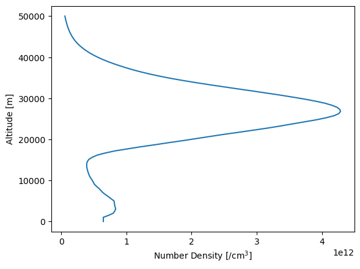

Using the Labow Climatology¶
[1]:
%matplotlib inline
[2]:
import sasktran as sk
import numpy as np
import matplotlib.pyplot as plt
[3]:
labow = sk.Labow()
print(labow)
SasktranIF Climatology: O3LABOW
Supported Species: ['SKCLIMATOLOGY_O3_CM3', 'SKCLIMATOLOGY_O3_VMR']
[4]:
altitudes = np.linspace(0, 50000, 100)
ozone = labow.get_parameter('SKCLIMATOLOGY_O3_CM3', latitude=0, longitude=0, mjd=54372, altitudes=altitudes)
[5]:
plt.plot(ozone, altitudes)
plt.ylabel('Altitude [m]')
plt.xlabel('Number Density [/cm$^3$]')
plt.show()
